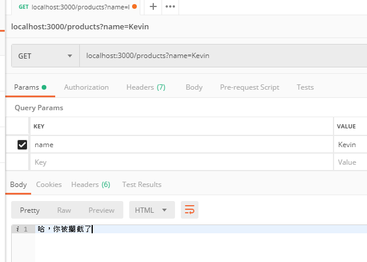
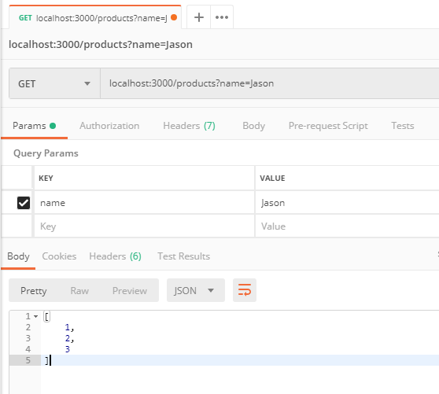
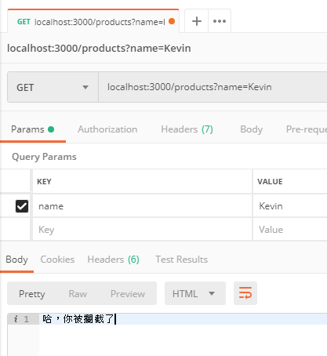

什麼是 Middleware? Middleware 是介於 Client 端與後端路由中間的一層或是多層 Function，而該 Functions 能存取 Request 與 Request 資訊，也可以透過 next() 來控制流程。

NestJS 裡的 Middleware 基本概念與 express 的 Middleware 相同，所以相關的資訊也可以參考 express middleware。而以下的幾件事情是可以透過 Middleware 完成的
- 執行任何程式碼
- 改變 Request / Response 物件內容
- 結束 Request /Response 生命週期
- 執行下一個 Middleware ，表示可以串接多個 Middleware
建立
可以透過 CLI 的指令建立 Middleware
1 | nest g mi <middleware-name> |
當建立完成後，以下為基本的 middleware 程式碼架構
1 | import { Injectable, NestMiddleware } from '@nestjs/common'; |
設定
當建立完一個 middleware 後，當然需要告訴 NestJS 說，這一個 Middleware 需要套用在那些路由規則上，這裡就先設定在最上層的 AppModule 內
-
實作
NestModule介面 -
建立
configure方法1
2
3
4
5
6
7
8
9
10
11
12import { Module, NestModule, MiddlewareConsumer } from '@nestjs/common';
import { AppService } from './app.service';
import { ProductsController } from './products/products.controller';
({
imports: [],
controllers: [ProductsController],
providers: [AppService],
})
export class AppModule implements NestModule {
configure(consumer: MiddlewareConsumer) {}
} -
利用 consumer 來設定 middleware 適用的路由範圍
1
2
3
4
5export class AppModule implements NestModule {
configure(consumer: MiddlewareConsumer) {
consumer.apply(CheckMiddleware).forRoutes(ProductsController);
}
}- apply 可以放多個 middleware，且會依序執行，但前提是每一個 middleware 都有執行
next() - 可以設定排除規則，
exclude( { path: 'products', method: RequestMethod.POST })，但根據官網說明，此規則並不適用於 functional middleware，在下面會介紹什麼是 functional middleware forRoutes有以下的設定方式- 直接放 Controller Class
- 指定路由
forRoutes('products') - 指定路由與請求方式
forRoutes({path: 'products', method: RequestMethod.GET }) - 也支援 Route wildcards 的方式，
forRoutes({ path: 'ab*cd', method: RequestMethod.ALL });
- apply 可以放多個 middleware，且會依序執行，但前提是每一個 middleware 都有執行
-
如果要設定成全域使用的 middleware 時，可以在
main.ts內設定1
2
3const app = await NestFactory.create(AppModule);
app.use(CheckMiddleware);
await app.listen(3000);
Middleware 進一步說明
那到底 Middleware 可以做到怎樣的事情呢? 這裡有一個簡單的範例
攔截所有的 Request ，不給進 ProductController
- middleware 的設定如上，直接套用
ProductController
1 | import { Injectable, NestMiddleware, HttpStatus } from '@nestjs/common'; |
接下來用 Postman 來打 /products ，看結果是什麼

當然可以加上一些條件，例如 Request 的內容中，如果 queryParams 的 name 是 Kevin 時，就會直接回傳，不然就進入 ProductController 內處理
1 | import { Injectable, NestMiddleware, HttpStatus } from '@nestjs/common'; |


Functional Middleware
如果 Middleware 不需要任何使用到其他的服務，就沒有寫成 Class 的必要性，可以單純的使用 Function 來完成
1 | export function logger(req, res, next) { |